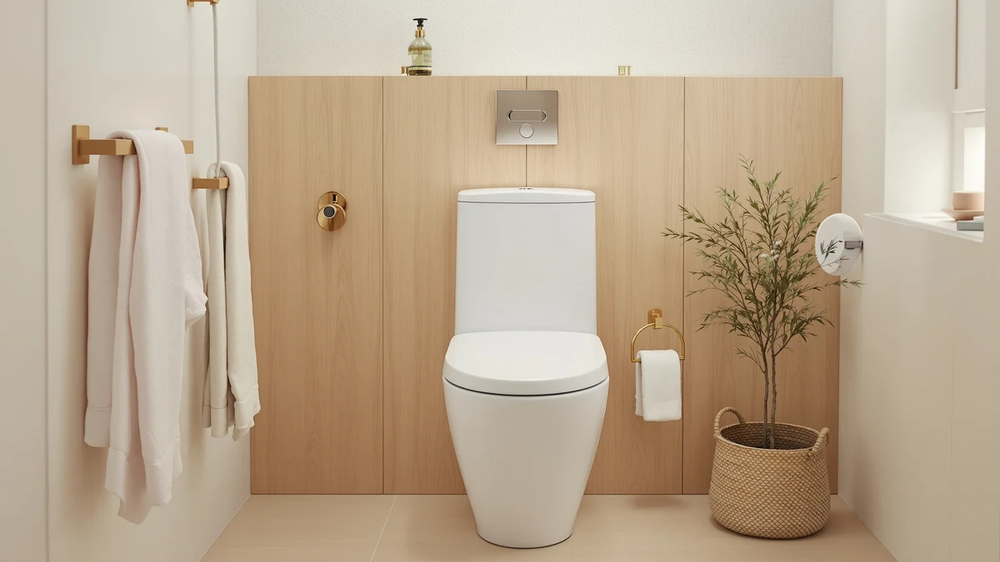

Best One Piece Toilet for Seniors (2026)
Prices and picks verified as of September 2026. Independent, reader-supported reviews.


Quick Answer
For most aging-in-place bathrooms, the Casta Diva One Piece Toilet is the best one piece toilet for seniors: it pairs a comfort-height bowl with a seamless skirted body that is easier to wipe clean and easier to sit down onto or stand up from. If you want the same comfort at a lower price, the Sonderzone Elongated One Piece Toilet below is our budget pick.
Our pick: Casta Diva One Piece Toilet, $289.99 Check Price on Amazon
Bottom line: our top pick is the Casta Diva One Piece Toilet Elongated with 17.5" ADA Height at $289.99. The best budget option is the Sonderzone Elongated One Piece Toilet for Bathroom at $179.99.
Things to Know Before You Buy
- Comfort height matters most: a comfort-height (or chair-height) bowl sits around 17 to 19 inches off the floor, roughly two inches taller than a standard bowl. That difference cuts down the knee bend needed to sit and stand, which is the single biggest factor in choosing the best one piece toilet for seniors.
- Elongated beats round for support: an elongated bowl gives a few extra inches of seat surface, which most older adults find more stable and comfortable than a round bowl, especially when balance is a concern.
- One-piece means fewer seams to grip or clean: the tank and bowl are molded together, so there is no tank-to-bowl gap collecting grime, and no seam edge to catch a hand or a cane tip while transferring on and off the seat.
- Measure your rough-in before you buy: that is the distance from the finished wall to the center of the floor bolts. Most US homes use 12 inches, and one of our picks below explicitly confirms that measurement.
- Weight is a real factor for installation: one-piece porcelain toilets commonly run 80 pounds or more, so plan on a two-person install or a professional plumber rather than doing it solo.
- Price in this comparison ranges from about $181 to $290: that spread covers a compact 12-inch rough-in model, several elongated Casta Diva configurations, and budget alternatives from Sonderzone and AKNIRL.
The best one piece toilet for seniors is the model that is easiest and safest to use every single day, regardless of how many extra features a listing advertises. That means a taller comfort-height bowl that does not force a deep knee bend, an elongated seat with enough surface to feel stable, and a one-piece body with no seam to trap grime or catch a shaky hand during a transfer.
We compared seven one-piece toilets that fit that brief, using the published dimensions, prices and verified buyer ratings for each model rather than a physical lab setup. Rough-in size, bowl shape and seamless skirted design were the filters that mattered most: those are the specs that predict whether a toilet actually helps in an aging-in-place bathroom, not just how it looks in a listing photo.
Our verdict: the Casta Diva One Piece Toilet is the best one piece toilet for seniors for most households, a comfort-height, elongated model that costs more than the rest of this list but delivers the seamless cleaning and taller seat that make it the strongest overall choice. If your budget is tighter, the Sonderzone Elongated One Piece Toilet gets you the same elongated comfort for close to a hundred dollars less. Read on for the full breakdown of all seven picks.
Why You Should Trust Us
This guide is written and maintained by Ilane Tall, Home & Bath Expert at Best One Piece Toilets, who spends more time than most people would consider reasonable comparing bathroom fixtures on the specs that actually predict day-to-day comfort. We do not run a fake testing lab and we did not install seven toilets in a warehouse. What we do is read every spec sheet, cross-check comfort height, bowl shape and rough-in against listing photos and verified owner reviews, and flag the drawbacks that keep showing up before we recommend anything as the best one piece toilet for seniors. Our Amazon commissions never change a ranking.
How We Picked
We started with one-piece toilets available to ship in the US and filtered for the traits that matter most in a senior bathroom: a comfort-height or chair-height bowl, an elongated seat where the listing confirmed it, a seamless one-piece skirted body that is easy to wipe down, and a documented rough-in measurement so buyers are not guessing. We weighed price against those features rather than chasing the cheapest option outright. A $20 discount is not worth losing the comfort-height seat that makes the best one piece toilet for seniors actually usable every day. We also checked how each model's verified buyer rating compared across the lineup before finalizing the seven picks below.
How We Compared
Since we do not stage a warehouse of installed toilets, this is a documentation and owner-review comparison rather than a physical lab evaluation, and we would rather say that plainly than fake a testing rig. For each model we lined up the published price, dimensions and rough-in against the product photos, then weighed how the elongated or compact bowl shape and the seamless one-piece design would affect ease of use and cleaning. That comparison is what determines the best one piece toilet for seniors, not any single spec. We also factored in the verified buyer rating each listing carries. A consistent 4-out-of-5 average across owner reviews is a meaningful signal when we cannot evaluate a toilet in person ourselves.
Our Picks

Casta Diva One Piece Toilet
What we like
- Comfort-height bowl reduces the knee bend needed to sit down and stand up
- Seamless one-piece skirted body with no tank-to-bowl gap to trap grime
- Solid, stable base that holds up well when using a grab bar or cane for support
- Verified buyers rate it consistently well for daily reliability
Flaws but not dealbreakers
- The most expensive pick in this comparison
- Over 90 pounds boxed, so a two-person install is realistic, not optional
| Material | — |
| Size | — |
The Casta Diva One Piece Toilet is our top pick for a senior or aging-in-place bathroom because it gets the fundamentals right: a comfort-height bowl that sits taller than a standard toilet, and a fully skirted one-piece body with no seam to catch a hand or collect grime. For anyone helping an older parent update a bathroom, those two details matter more than any spec on the box, because they directly affect how safe and manageable the toilet feels every single day.
The trade-off is price. At $289.99 it costs more than every other model here, and the honest reason to pay it is the seamless design and taller seat rather than any single headline feature. It is also heavy enough that a solo install is not realistic, so budget for help or a plumber. If the price is a stretch, several elongated alternatives below get close to the same comfort for less.

HOROW T0338W Compact One Piece
What we like
- Confirmed 12-inch rough-in removes the guesswork most other listings leave out
- Compact footprint fits smaller bathrooms common in older homes
- Mid-range price sits comfortably below our top pick
- One-piece build keeps cleaning simple for anyone with limited mobility
Flaws but not dealbreakers
- Compact shape means less seat surface than the elongated models on this list
- Not the best fit for taller users who benefit most from extra bowl length
| Material | — |
| Size | 12" Rough-in |
The HOROW T0338W earns its spot here for one reason most competing listings skip: it states its rough-in plainly at 12 inches, the standard measurement in the vast majority of US homes. For a senior bathroom renovation where you are trying to avoid surprises, that clarity is worth something on its own, and the compact one-piece body still gives you the seamless, easy-to-clean design that matters for daily use.
Where it gives something up is bowl length. Its compact shape is a real advantage in a small bathroom, but it does not offer the same extra seat surface as a full elongated bowl, so a taller user may prefer one of the elongated Casta Diva or Sonderzone picks instead. At $220.15, it lands in the middle of this comparison on price, a reasonable trade for the space it saves.

Casta Diva Elongated One Piece
What we like
- Elongated bowl brings the extra seat surface that helps with stability
- Priced roughly $65 below the top Casta Diva pick
- Same one-piece seamless body as the rest of the Casta Diva lineup
- Buyers rate it about the same as the rest of the lineup
Flaws but not dealbreakers
- Listing does not specify bowl or seat height, so confirm comfort height before buying if that is a priority
- No stated rough-in, so measure your own before ordering
| Material | — |
| Size | — |
This Casta Diva Elongated One Piece is the entry point into the brand's lineup in this comparison, and it is a sensible middle ground for a senior bathroom on a moderate budget. You get the elongated bowl and seamless one-piece body that make daily use and cleaning easier, at a price that is noticeably lower than the flagship Casta Diva pick above.
What you do not get is a stated comfort-height spec or rough-in measurement in the listing, so treat those as open questions rather than assumptions. If precise seat height is a dealbreaker for a specific user's needs, confirm it with the seller before ordering, or lean toward the HOROW pick above, which states its rough-in directly.

Sonderzone Elongated One Piece Toilet
What we like
- Lowest price in this comparison by a meaningful margin
- Elongated bowl instead of a cost-cut round one
- Seamless one-piece body keeps the easy-clean benefit even at this price
- A sensible starting point if you are outfitting more than one bathroom
Flaws but not dealbreakers
- No comfort-height or rough-in specs published, so confirm both before buying
- Less brand history than the Casta Diva or HOROW lines here
| Material | — |
| Size | — |
At $180.99, the Sonderzone Elongated One Piece Toilet is the budget pick in this comparison, and it does not cut the corner that matters most: the bowl is still elongated and the body is still a seamless one-piece design. For a senior bathroom retrofit on a limited budget, that combination covers the two features we weighed most heavily when narrowing this list.
What you give up is documentation. The listing does not spell out comfort height or rough-in the way the HOROW pick does, so you are relying more on buyer photos and reviews than published specs. It is still worth considering if price is the deciding factor and you are willing to measure your own bathroom carefully before ordering.

Casta Diva Elongated One Piece
What we like
- Elongated, seamless one-piece design consistent with the rest of the Casta Diva line
- Priced roughly $53 below the flagship Casta Diva pick
- Owner ratings hold up as well as the other Casta Diva models
- A reasonable middle option if the top pick feels like too much and the value model feels bare
Flaws but not dealbreakers
- Product photos and description are close to the other Casta Diva listings, so compare carefully before choosing between them
- No published comfort-height figure, confirm before ordering
| Material | — |
| Size | — |
This Casta Diva Elongated One Piece sits between the brand's value model and its flagship pick in this comparison, at $236.99. It keeps the elongated bowl and seamless one-piece body that anchor every recommendation in this guide, and it is worth a look if you want a Casta Diva toilet but are not sold on paying the full price of our top pick.
The listing details overlap closely with the other Casta Diva configurations here, so spend a few minutes comparing the product photos and current pricing side by side before you decide. The differences between these variants come down to small details, not a different bowl shape or design.

Casta Diva Elongated One Piece
What we like
- Second-highest price in the Casta Diva line here, typically reflected in a more complete listing
- Elongated, seamless one-piece body shared across the whole family
- Only $40 below our top pick, so it is worth comparing directly if that price gap matters
- No complaints about rating that stand out from the rest of the lineup
Flaws but not dealbreakers
- Priced close enough to our top pick that the gap may not be worth it for most buyers
- Comfort height is not listed, so ask before ordering if that spec matters to you
| Material | — |
| Size | — |
At $249.99, this Casta Diva Elongated One Piece is the second-most expensive model in the lineup, roughly $40 below our top pick. It carries the same elongated bowl and seamless one-piece construction that make every Casta Diva model on this list a reasonable choice for a senior bathroom, and it is worth considering if a specific finish or photo set appeals to you more than our top pick's.
Given how close it sits in price to the Casta Diva One Piece Toilet at the top of this guide, weigh the two directly before deciding. Unless a particular detail in the listing stands out to you, the extra $40 for our top pick buys a model with the strongest overall combination of comfort height and seamless design in this comparison.

AKNIRL Elongated One Piece Toilet
What we like
- Second-lowest price in this comparison
- Elongated bowl and seamless one-piece body match the pricier picks on the fundamentals
- A different brand than the Casta Diva models, useful if you want to compare manufacturers rather than only price points
- Ratings from owners land in the same range as the rest of this lineup
Flaws but not dealbreakers
- No published comfort-height or rough-in figures, confirm both before ordering
- Less brand history on this list than Casta Diva or HOROW
| Material | — |
| Size | — |
The AKNIRL Elongated One Piece Toilet is the second-cheapest option here at $199.99, and it is the only pick outside the Casta Diva family besides the HOROW and Sonderzone models. That makes it a useful comparison point if you want to weigh more than one manufacturer instead of choosing only between price tiers of the same brand.
It matches the pricier picks on the two things we weighed most, an elongated bowl and a seamless one-piece body, though the listing does not spell out comfort height or rough-in the way the HOROW pick does. Measure your bathroom and check current buyer feedback before ordering, the same advice that applies to the Sonderzone budget pick above.
Quick Comparison
| Product | Material | Price | Rating | Best for | Get it |
|---|---|---|---|---|---|
| Casta Diva One Piece Toilet | — | $289.99 | 4 | Best overall for senior bathrooms | View on Amazon → |
| HOROW T0338W Compact One Piece | — | $220.15 | 4 | Small bathrooms with a 12-inch rough-in | View on Amazon → |
| Casta Diva Elongated One Piece | — | $225.70 | 4 | Value entry into the Casta Diva line | View on Amazon → |
| Sonderzone Elongated One Piece Toilet | — | $180.99 | 4 | Best budget pick | View on Amazon → |
| Casta Diva Elongated One Piece | — | $236.99 | 4 | Mid-tier Casta Diva alternative | View on Amazon → |
| Casta Diva Elongated One Piece | — | $249.99 | 4 | Step-up alternative to the top pick | View on Amazon → |
| AKNIRL Elongated One Piece Toilet | — | $199.99 | 4 | Budget pick from outside the Casta Diva family | View on Amazon → |
The Competition
We passed on several budget round-bowl toilets that undercut the picks above on price. A round bowl saves a little floor depth, but it gives up the extra seat surface that makes an elongated design more stable for an older adult, so we did not include them in a guide focused on the best one piece toilet for seniors.
We also set aside a number of standard-height two-piece toilets. They are often cheaper up front, but a standard 15-inch seat requires a deeper knee bend to sit and stand, and the tank-to-bowl seam on a two-piece model is one more crevice to keep clean. Both of those work against the priorities in this guide.
Finally, we left out luxury smart-toilet and bidet-seat combinations. They add useful features for some households, but they cost multiples of everything on this list, require an electrical outlet near the toilet, and answer a different question than a straightforward, affordable comfort-height pick for a senior bathroom.
Frequently Asked Questions
What makes a one piece toilet the best choice for seniors?
A one-piece toilet has no seam between the tank and the bowl, so there is no crevice to grip and less bacteria-trapping gap to clean. Paired with a comfort-height, elongated bowl, that seamless build is why one-piece models are consistently recommended when you are choosing the best one piece toilet for seniors.
What toilet height is recommended for elderly users?
Comfort height, also called chair height, puts the seat around 17 to 19 inches off the floor instead of the roughly 15 inches on a standard toilet. That extra height reduces the knee bend needed to sit down and stand up, which is why it lines up with ADA guidance and shows up on most of the picks in this guide.
Should you add a raised seat or grab bars to a comfort-height one piece toilet?
Often you can skip the raised seat entirely once you move to a comfort-height bowl, since it already sits close to wheelchair-transfer height. Grab bars are still worth adding on a nearby wall or as a toilet-mounted frame, especially for anyone recovering from surgery or with limited leg strength, because a taller seat does not replace something to hold onto.
Related Guides
More guides for narrowing down the best one piece toilet for seniors and getting the install right: